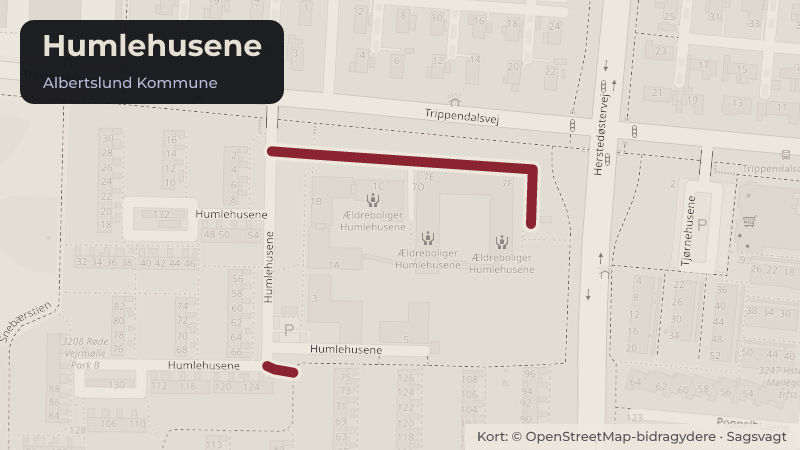

Besluttet 22. oktober, Social- og Beskæftigelsesudvalget, Albertslund
SBU - Orientering om uanmeldt tilsyn på Bofællesskabet Humlehusene

Kort fortalt
- Forslaget
- Orientering om uanmeldt tilsyn på Bofællesskabet Humlehusene tages til efterretning.
- Hvem
- Social- og Beskæftigelsesudvalget, Albertslund Kommune
- Hvornår
- Torsdag 22. oktober 2026
- Status
- Besluttet. Supplerende sagsfremstilling Tiltrådte indstillingen.Beslutningen er forkortet her. Læs hele beslutningen
Er noget forkert her? Skriv til os
Læs hele sagen Kommunens egen tekst
Indstilling
Direktøren for Børn, Sundhed & Velfærd indstiller,
1. at orientering om uanmeldt tilsyn på Bofællesskabet Humlehusene tages til efterretning.
Sagsfremstilling
Uanmeldt tilsyn på Bofællesskabet Humlehusene
Socialtilsyn Hovedstaden var den 4. august 2026 på et uanmeldt tilsynsbesøg i Bofællesskabet Humlehusene. På
baggrund af tilsynsbesøget har Socialtilsynet udarbejdet en rapport, jf. bilag 1. Afrapporteringen indeholder en samlet
vurdering af kvaliteten i tilbuddet samt en kort gennemgang af de fem temaer og tilhørende kriterier i
kvalitetsmodellen. Kriterierne vurderes efter en binær score, som er opfyldt / ikke opfyldt. I tillæg hertil fremgår
Socialtilsynets overordnede vurdering af tilbuddets økonomi.
Bofællesskabet Humlehusene er et botilbud, som udelukkende henvender sig til voksne med udviklingshandicap.
Bofællesskabet består af otte lejligheder. Der er seks fastansatte samt en leder.
Bofællesskabet Humlehusene opretholder sin godkendelse
Socialtilsynets samlede vurdering er, at tilbuddet har den fornødne kvalitet på tværs af alle kvalitetstemaer og kriterier.
Tema
Kvalitetskriterium
Faglig vurdering
Målgruppe, metoder og
resultater
Tilbuddet arbejder med afsæt i en tydelig
målgruppebeskrivelse systematisk med faglige
tilgange og metoder, der fører til positive
resultater for borgerne
Opfyldt
Sundhed og trivsel
Tilbuddet understøtter borgernes selv- og
medbestemmelse.
Opfyldt
Tilbuddet understøtter borgernes fysiske og
mentale sundhed og trivsel.
Tilbuddet forebygger magtanvendelser.
Tilbuddet forebygger vold og overgreb.
Organisation og ledelse
Tilbuddet har en kompetent ledelse.
Opfyldt
Tilbuddets daglige drift varetages kompetent.
Kompetencer
Tilbuddets medarbejdere besidder relevante
kompetencer i forhold til målgruppens behov og
tilbuddets metoder.
Opfyldt
Fysiske rammer
Tilbuddets fysiske rammer understøtter
borgernes udvikling og trivsel.
Opfyldt
Kommunens vision og politikker
Handicappolitikkens formål er at mindske udfordringer og øge tilgængelighed samt deltagelsesmuligheder for alle
byens borgere. Et botilbud af høj kvalitet, der møder beboerne der, hvor de er og understøtter dem i at leve det liv, de
ønsker, er en væsentlig forudsætning for at mindske udfordringer og øge beboernes deltagelsesmuligheder.
Økonomi
Socialtilsynets overordnede vurdering er, at tilbuddet har den fornødne økonomiske kvalitet. Således vurderer
tilsynet, at tilbuddet er økonomisk bæredygtigt, tilbuddets økonomi giver mulighed for den fornødne kvalitet i
tilbuddet i forhold til prisen og i forhold til tilbuddets målgruppe samt der er gennemsigtighed i tilbuddets
økonomi.
Budgettet for Bofællesskabet Humlehusene er i 2026 på 4,4 mio. kr.
Lovgrundlag
Lov om socialtilsyn.
Borgerperspektiv
Socialtilsynet har på tilsynsbesøget været i dialog med borgere, der bor i Bofællesskabet Humlehusene. Socialtilsynet
vurderer, at tilbuddet sikrer borgernes medinddragelse samt selv- og medbestemmelse vedrørende beslutninger om
dem selv samt hverdagen i tilbuddet.
Socialtilsynet vurderer, at medarbejdere, herunder ikke-fastansatte medarbejdere, møder borgerne med respekt for
den enkeltes behov og forudsætninger. Medarbejderne har ligeledes fokus på borgernes retssikkerhed.
Beslutning
Supplerende
sagsfremstilling
Tiltrådte indstillingen.
Nils Jul Gjerlev (C), Akhlaq Ahmad (A) og Michael Melchert (I) deltog ikke under punktet.
Kilde: Albertslund Kommune, Social- og Beskæftigelsesudvalget, referat fra mødet torsdag 22. oktober 2026, punkt 6. Læs den originale sag hos kommunen.
Steder i sagen: Humlehusene